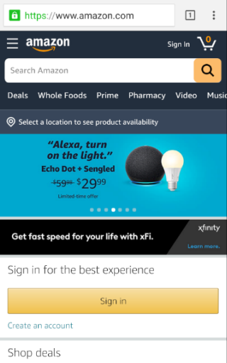
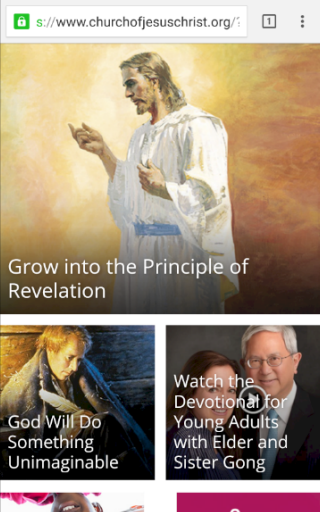

PARC: Contrast
Amazon
Amazon.com
With contrast, the most prominent buttons are are for "Search Amazon" and "Sign in". Those are the two buttons will most likely be needed the moment you reach their page and it draws your eyes right to them.
PARC: Proximity
Wells Fargo
WellsFargo.comProximity works well with their menu. Most everything else seems out of place on the main page, but the little menu in the upper right corner is well organized and related items are separated into sub-menus.
PARC: Alignment
Church of Jesus Christ
ChurchOfJesusChrist.org
The images are big and bold. The first image spans the width of the screen and all the following images are formed in two columns. It's easy to browse through the titles and see what's new on the site.